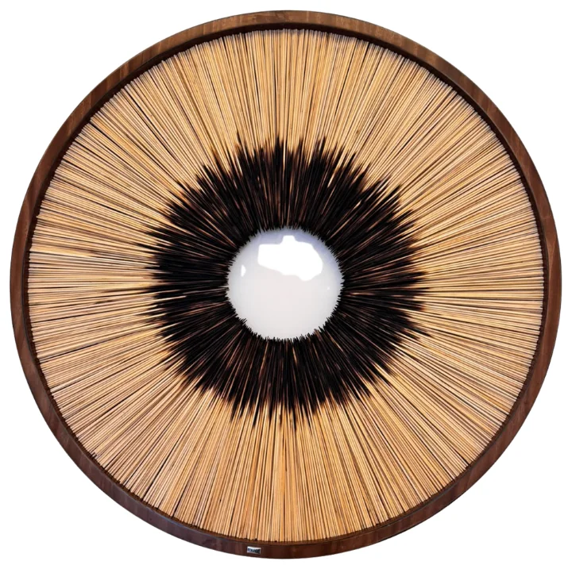

Nivel 3
Corteza de Fuego
Homenaje a la resiliencia de la naturaleza, donde el fuego transforma el bambú y simboliza el renacer y el constante resurgir de la vida.
Técnica: Bambú carbonizado artesanalmente al fuego (Shou Sugi Ban), dispuesto en una composición radial concéntrica.